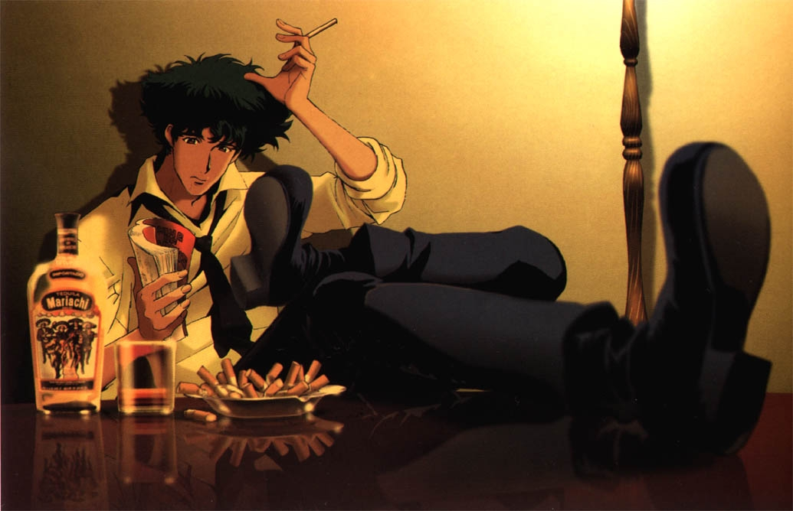

Spike Spiegel: The Space Cowboy

Spike Spiegel is the lead character of a Japanese Anime program entitled Cowboy Bebop and one of my personal favorite fictional characters. Spike is a bounty hunter in the later 21st century in the show, however he has a very mysterious past centered around gang/mob related work and connections. Spike's personality is mostly aloof, yet precise and both physically/mentally capable. He is a master of the Jeet Kun Do martial arts style, created and made famous by Bruce Lee. I believe Spike is a very enjoyable character in watch in alot of ways. He is the type of character that seems very understandable and simple at first glance, but upon deeper inspection has a very grounding background. I personally feel his background to be relatable to similar events within my own life, probably leading to a certain amount of familiarity or affection towards the character.
Cowboy Bebop centers around four lead characters and their adventures, mainly involving bounty hunting, across the solar system in the late 21st century. The show primarily centers around the character's pursuit and progression towards apprehending bounties for monetary reward, only to generally end with no reward and little monetary progression for the characters. Utilizing many flashbacks and specific character-centric episodes, the characters are fleshed out over time through their pasts contrasting with their present/future. The score for the show is varied and adds alot of extra gravity to already very personal subject matter. Despite the relatively short run time of 26 episodes (common to a Japanese anime series), it is an incredibly successful and popular series with a huge cult following.